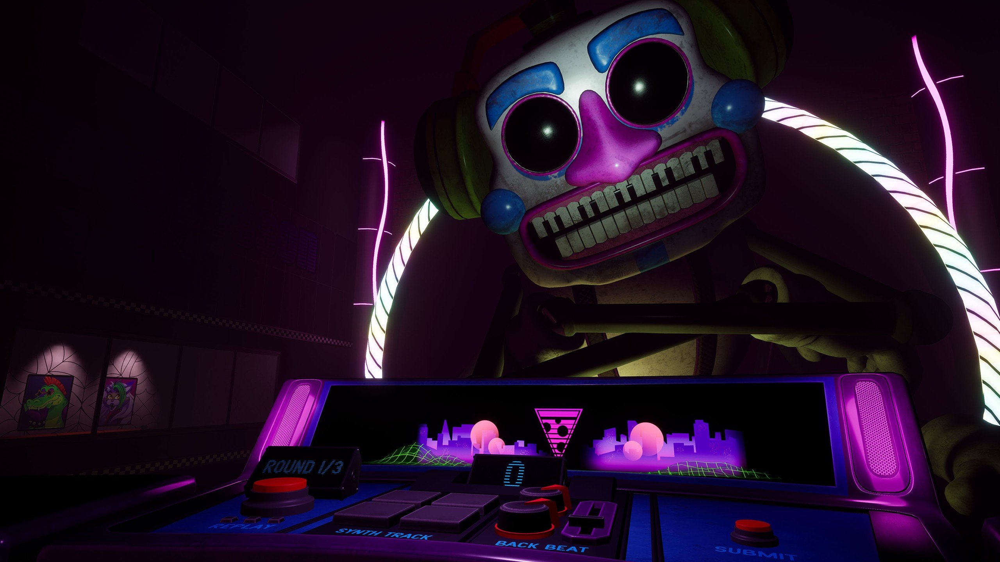

Five Nights at Freddy's Help Wanted 2 é a sequência do jogo de realidade virtual "Five Nights at Freddy's Help Wanted" desenvolvido pela Steel Wool Studios.
Lançado em 14 de dezembro de 2023, o jogo continua a oferecer uma experiência imersiva de terror em realidade virtual, trazendo também novos desafios e aprofundando ainda mais a história desse universo complexo.
A história de "Help Wanted 2" dá continuidade aos eventos do primeiro jogo, com a Fazbear Entertainment ainda tentando limpar sua imagem e explorar novos caminhos para a tecnologia de realidade virtual. O jogador novamente assume o papel de um testador de jogos, agora enfrentando novos cenários e desafios baseados em eventos passados e inéditos da série FNaF.
Como seu predecessor, este jogo é de realidade virtual e explora esse recurso ao máximo para melhorar a imersão. Além disso também adiciona novos Minigames e simulações que desafiam o jogador de diversas maneiras, sendo alguns deles até reparar animatrônicos sobre uma pressão imensa. Ainda trás animatrônicos clássicos, novos personagens e variantes de alguns que já existem, cada um com suas próprias mecânicas e jumpscares.
